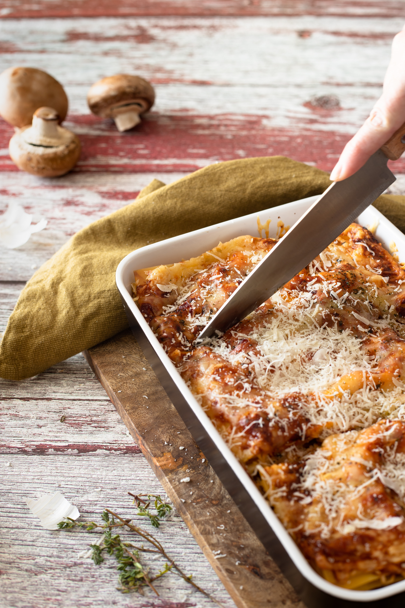

Lasagna Recipe

How to make this amazing lasagna:
This lasagna will leave your family smiling if you follow these simple steps listed below. You will get a meaty cheesy yummy treat worth bragging about.
Without further ado lets get into the steps that you will have to follow to make this delicious treat.
Ingredients:
- 2lbs ground beef
- 2 jars of your favorite pasta sauce or marinara sauce
- 1 large bag of mozzerella cheese and 1 large bag of parmesan cheese
- 2 tubs of ricotta cheese
- 1 box of lasagna noodles
- 1-2 eggs
Steps:
- Brown your ground beef in a skillet with a little bit of your choice of cooking oil and seasoning spices. Most standard meat spices work really well here and make sure to have the oregano or some form of italian seasoning spice. While doing this also add your lasagna noodles to boiling water and cook for approximately 7-10 minutes or until al dente.
- After browning your meat proceed to make your cheese mixture utilizing your eggs and ricotta inside a large mixing bowl. Slowly mix the ricotta and eggs together till mostly blended. After slowly start to add some parmesan cheese and mix into the mixture until fully and well blended it should somewhat resemble a sticky dough or plato like texture when properly mixed.
- Once all of your main components are ready get out a 13x9 cake pan ideally that is deep alternatively you can use a lasagna pan as well. Grab your sauce jars and open them and set them aside next to your other ingredients. Grab the mozzerella and we are ready to proceed to the next step.
- To assemble the lasagna we will start off with a layer of 4 lasagna noodles 3 is fine if you have a less wide pan. After your first layer of noodles add one layer of ground beef. Next add a layer of sauce on top of the meat. Now generously spread your ricotta parmesan mixture over the meat and sauce using a spreading spatula and then top with some more mozzerella and parmesan. You will repeat this step 2 times until it is time to do the top and final layer which is only slightly different.
- For the top layer lay down your layer of noodles as before and add meat as before. For this layer add whatever is left of your sauce and ricotta mixture and then add one last layer of noodles to seal on top. Carefully press the noodles down to seal the edges and then top generously with your remaining mozzerella and parmesan to your liking. Add some additional italian seasoning on top and your choice of spices to flavor the cheesy crust that will form on top.
- Finally put the lasagna into your preheated to 400 degrees oven and bake for 20-30 minutes or until you see the noodles and cheese gets a nice golden yellow to it. Be very mindful to watch and not burn the cheese. Eat and enjoy.